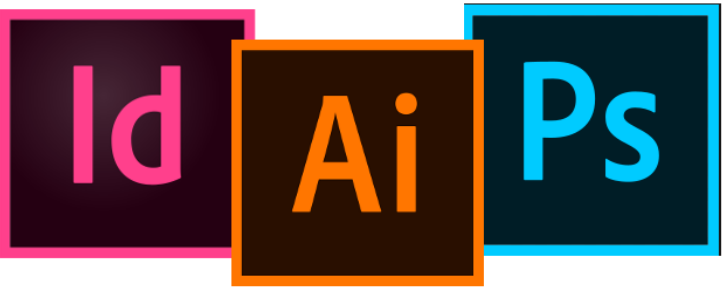

Me découvrir
Diplomé d'un BTS Assistant de Manager, mais n'étant pas un domaine professionnel qui m'interessais réellement, j'ai décidé de changer de voie. Je me suis dans un premier temps tourné vers le design et l'infographie. Pour finalement arriver dans le développement web. Durant toutes mes années d'études, j'ai eu l'occasion de travailler tres souvent en équipe sur des projets avec des deadlines a respecter. J'ai pu également acquérir quelques notions de design. Notamment, grâce à l'utilisation de logiciels de design, tel que Illustrator, Indesign ou Photoshop. Actuellement, je suis en formation de developpeur web (Simplon.co) au sein de l'A.D.E.P de Roubaix. Si mon profil vous intéresse, contactez-moi.
Télécharger mon CV- Développement web - Simplon Roubaix
- Formation de 7 mois en développement web, mise en pratique des languages html5, css3, javascript, sql et php.
- BTS Design Graphique option médias imprimés
- Formation à la conception et à la réalisation d'identités visuelles, de maquettes et de mises en pages, d'affiches publciitaires, de spot TV.
- Mise à Niveau en Arts Appliqués
- Classe préparatoire qui forment aux domaines propres aux arts appliqués et aux métiers de l'art.
- BTS Assistant de Manager
- Formation qui vise à étudier différents domaines, tel que les ressources humaines, la gestion administrative et la communication.
FORMATION
- Préparateur de commande en drive
- Préparation de commandes aux clients et livraison des clients.
- Assistant en mairie
- Accueil des usagers, aide à la création de divers documents, préparation des élections régionales.
- Assistant RH
- Archivage et classement de dossiers, commande auxprès des fournisseurs, réactualisation de la base de données.s
EXPERIENCES
PROFESSIONNELLES
COMPETENCES
- 